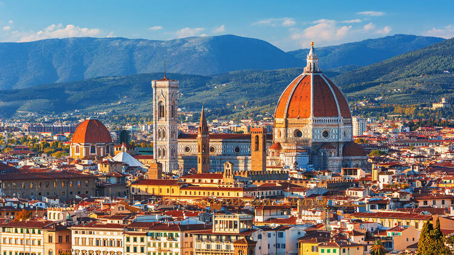
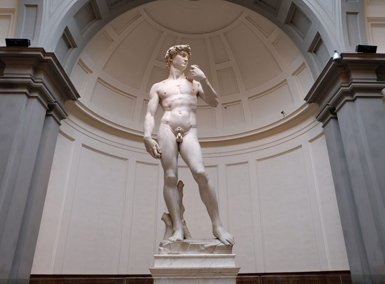
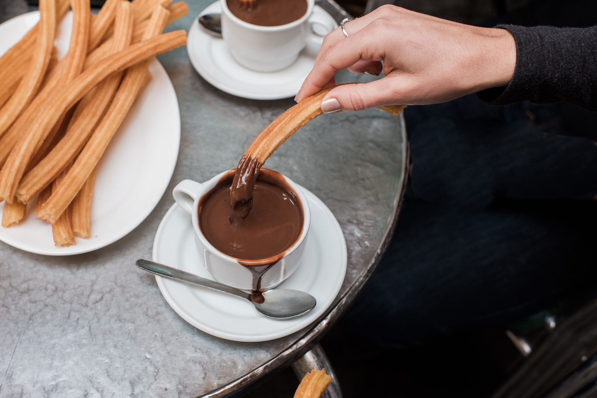
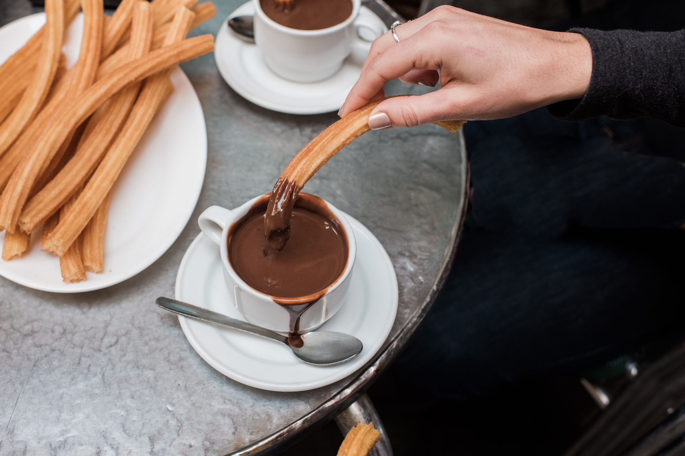
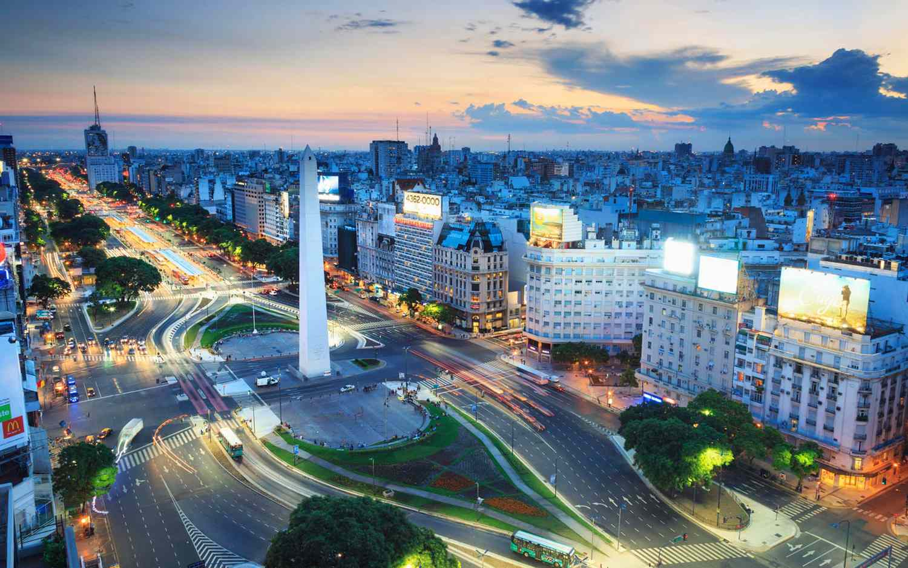
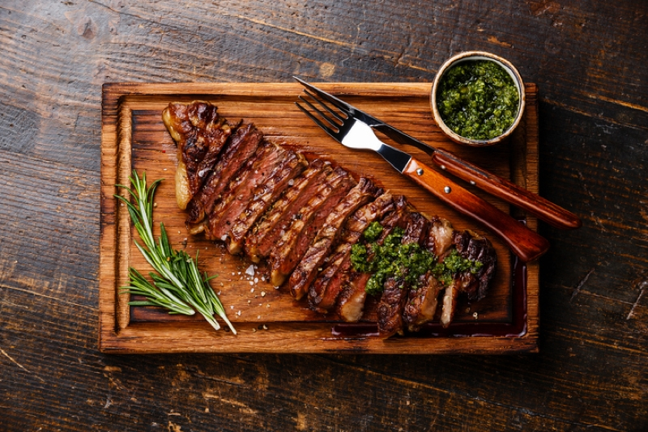

Florence, Italy
 Wandering through the enchanting city of Florence, I discovered its rich history, captivating architecture, and artistic treasures. The Galleria dell'Accademia revealed a masterpiece—a towering marble sculpture by Michelangelo. As I stood before the David, every detail came alive—the sinews of the muscles, the veins beneath the surface, and the expression that captured both vulnerability and strength.
Lost in contemplation, I realized that I was part of a lineage of admirers who had stood before this masterpiece across centuries. Florence's allure lingered in my heart as I left the gallery. The city, with its narrow streets and Renaissance wonders, had left an indelible mark on my soul. The David, standing proud and resilient, symbolized Florence's enduring legacy, a testament to the boundless possibilities that emerge when passion and craftsmanship converge.
Madrid, Spain
 

Stepping into the vibrant streets of Madrid, I was captivated by its unique charm. The blend of historic architecture, lively plazas, and the warm Spanish sun created an atmosphere of pure joy. Wandering through the heart of the city, quaint cobblestone alleys revealed Madrid's rich history, from the grandeur of the Royal Palace to the intricate details of the Puerta del Sol.
One highlight of my Madrid adventure was the irresistible aroma that led me to a charming churrería. The promise of churros and hot chocolate drew me in with the anticipation of a delightful indulgence. Sitting in a cozy corner, the churros arrived, golden and crispy, accompanied by a cup of velvety hot chocolate. The first bite was a revelation— a perfect blend of crunch and warmth that sent waves of pleasure through my taste buds. As the sun dipped below the horizon over the Plaza Mayor, I reflected on the wonders of Madrid, realizing that it had become more than a destination; it was an experience etched in my heart.
Buenos Aires, Argentina
 Exploring the vibrant streets of Buenos Aires, I immersed myself in the city's lively atmosphere, rich culture, and captivating charm. The blend of historic architecture, passionate tango rhythms, and the warmth of the Argentine sun created an unforgettable backdrop. Wandering through its neighborhoods, I discovered the unique energy that defines Buenos Aires.
However, one culinary experience stood out—the delight of savoring Argentine meat. In a traditional parrilla, the aroma of grilling meat wafted through the air, enticing my senses. The first bite was a revelation, a symphony of flavors and tenderness that showcased the expertise of Argentine grill masters. Each cut of meat, perfectly seasoned and cooked to perfection, became a celebration of culinary artistry.
As I indulged in the rich flavors of Argentine beef, the dining experience became more than a meal; it was a gastronomic journey into the heart of Argentina. The memories of savoring exquisite meat under the Argentine sky lingered in my heart, adding a savory note to my unforgettable adventure in Buenos Aires.